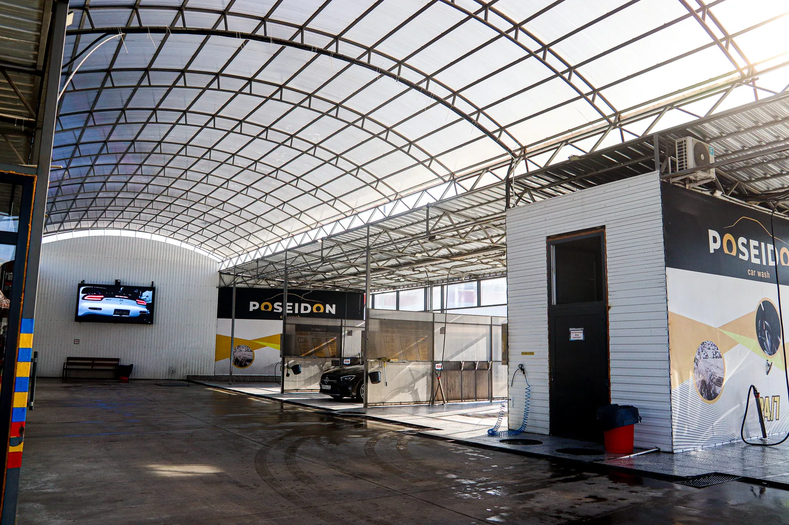
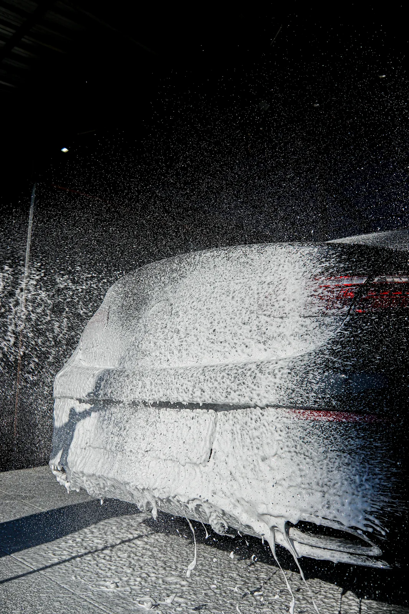
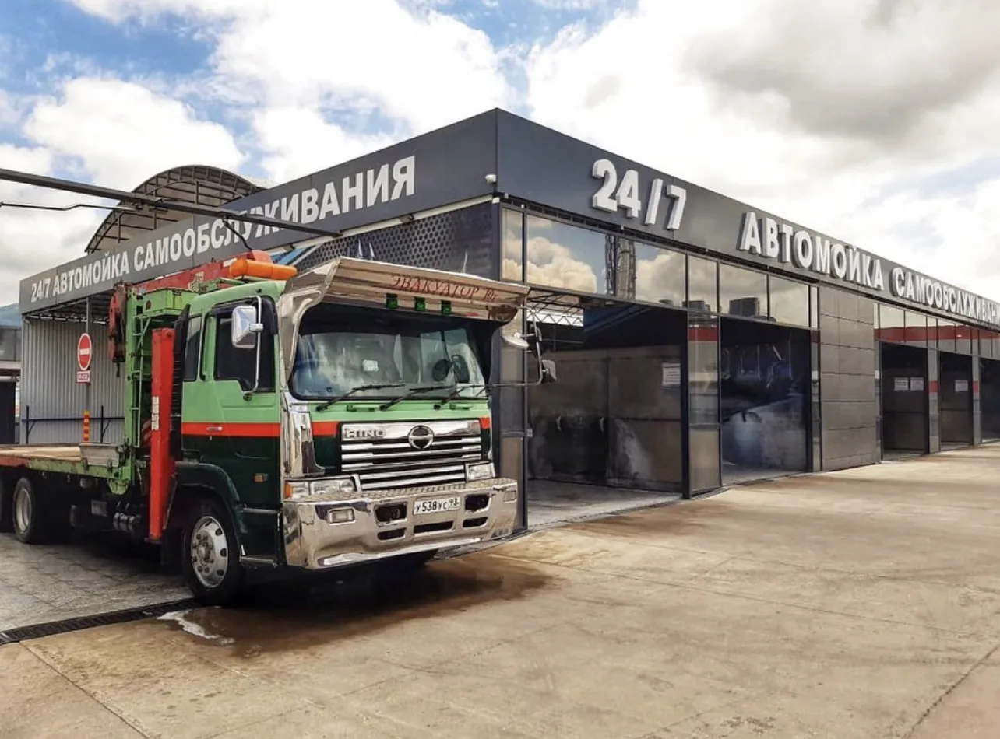
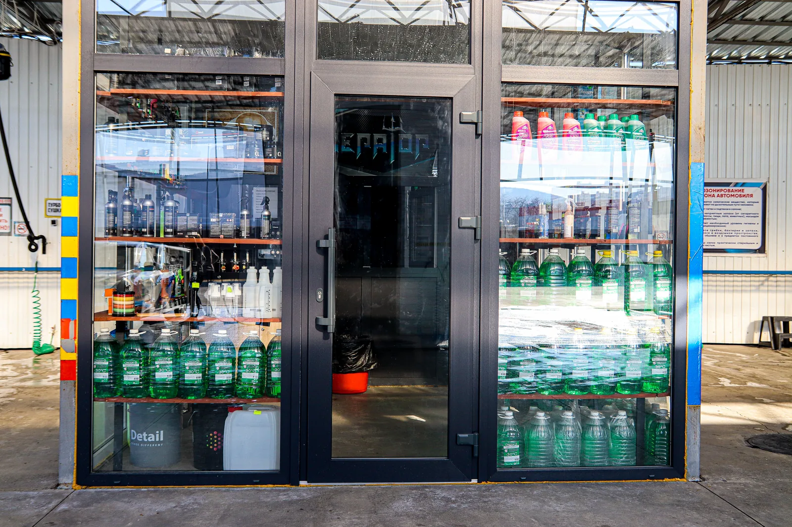

Автомойка самообслуживания · Новороссийск
Мойка самообслуживания в Новороссийске – круглосуточно, под крышей
Шесть боксов под крышей на Анапском шоссе: работаем круглосуточно, в боксах лежат щётки – в том числе для дисков, есть турбосушка и мощные пылесосы, оплата любым способом. Рядом – магазин профессиональной автохимии.
- Рейтинг 5,0 – 411 оценок на Яндекс.Картах
- Анапское шоссе, 105 – работаем 24/7
- Турбосушка, пылесосы и магазин автохимии

Что вас ждёт на Посейдоне
Входит
- Бокс под крышей – моете машину в любую погоду
- Щётки в каждом боксе, есть отдельные для дисков
- Турбосушка и мощные пылесосы – по отзывам, «выручают»
- Круглосуточно, без выходных
Рядом, если нужно
- Магазин автохимии при мойке – воски, покрытия, очистители
- Помощь сотрудников – подскажут с аппаратом
Автохимия в магазине при мойке
Цены – из прайса карточки на Яндекс.Картах.
Магазин автохимии
- Detail Hard Wax – твёрдый воскзащита лакокрасочных покрытий1 600 ₽
- SHIMA QUARTZ – кварцевое покрытиедля ЛКП, на кварцевой основе1 150 ₽
- Глина CLAYнеабразивная, подготовка кузова к полировке2 400 ₽
- Набор «Сам себе детейлер»Stage 1 или 2 – уход за салоном2 500 ₽
- Набор по уходу за кожейочищение и защита кожи3 300 ₽
- Очиститель стёкол GLASSстёкла, зеркала, фары400 ₽
Ассортимент магазина больше списка. Стоимость поста мойки – на месте, оплата любым способом.
Как проходит мойка
- 01
Заезжаете в свободный бокс
Шесть боксов под крышей, круглосуточно – без записи и ожидания.
- 02
Моете под себя
Щётки в боксах, в том числе для дисков; пена и химия под загрязнение.
- 03
Сушите и собираете машину
Турбосушка и мощные пылесосы – то, за что хвалят мойку в отзывах.
- 04
Оплачиваете как удобно
Любой способ оплаты; сотрудники помогут, если появится вопрос.



Чего у нас не бывает
Не бывает «закрыто»
Мойка работает круглосуточно, без выходных.
Не бывает очереди под дождём
Все боксы под крышей – погода не важна.
Не бывает «нет сдачи»
Оплата любым способом, как вам удобно.
Не бывает одинаковых боксов
В каждом – свои щётки, в том числе для дисков.
Отзывы с Яндекс.Карт
«Очень редко оставляю отзыв, но тут приятно удивлен, ребята огромные молодцы, сам из Санкт-Петербурга, приезжаю второй год подряд в Новороссийск, сразу заезжаю на мойку, и тут я приятно удивлен, отличный сервис мойки, все есть, сам занимаюсь детейлингом, машина у меня в пленке, тут же магазин химии, блин ребята я прям рад, что есть такие места.»
Сергей П. · Яндекс.Карты
«Прекрасная автомойка, аппараты работают отлично, оплачивать удобно любым способом. Из приятных бонусов почти в каждом боксе лежат разные щетки, к примеру, для дисков. Также есть турбосушка которая меня много раз выручала. Мощные пылесосы очень радуют! Сотрудники отзывчивые всегда помогут если есть какие то вопросы. Всем советую.»
Руслан Климовский · Яндекс.Карты
«Огромная благодарность Александру за профессиональную работу! Являемся постоянными клиентами, очень чисто и добросовестно приводит автомобиль в идеальное состояние. После мойки садишься за руль.. Как-будто новое авто.»
Александр Кирпо · Яндекс.Карты
Отзывы с карточки на Яндекс.Картах, без правок.
Частые вопросы
Нужна ли запись?
Нет, мойка самообслуживания работает круглосуточно – заезжайте в любой свободный бокс.
Как оплатить мойку?
Любым способом – так написано в отзывах клиентов: «оплачивать удобно любым способом».
Что с сушкой и пылесосом?
На мойке есть турбосушка и мощные пылесосы – по отзывам, «выручали много раз».
Есть ли химия для ухода?
Да, при мойке магазин автохимии: воски, кварцевые покрытия, очистители – цены в прайсе выше.
Написать в мойку Посейдон
- Адрес
- Новороссийск, Анапское шоссе, 105
- Часы
- Круглосуточно, ежедневно
- Телефон
- +7 (988) 342-11-85